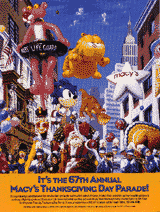
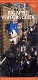
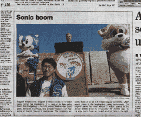
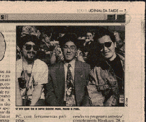
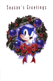
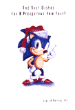
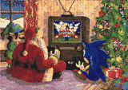
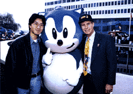
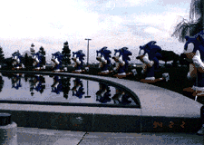

＜海外編＞

毎年、サンクスギビングデイに行われるパレードのチラシ。
ブロードウェイを、おおきなソニックのバルーンが行進するぞ。
レア度：

ニューヨークの観光ガイド（Big Apple Visitors Guide）の表紙
にも登場。
レア度：
 
こりゃ珍しいぞ！中さんたちが海外の新聞に載った時。
ちなみに、左のアメリカの新聞、前のページに載ってる
ブッシュ大統領よりも写真が大きく載ってるのが自慢
なんだってさ。
右のは、なんとブラジルの新聞らしい。
レア度：
 
セガオブアメリカの社内でつくった、クリスマスカード。
左が表紙で、ひらくと右の絵になるんだ。
レア度：

ソニック２の時に、開発内部で使われたクリスマスカード。
中央のモニターに映っているのは、ソニック２タイトル画面の
開発中バージョンだ！も〜レアすぎ！
レア度：
 
ここまでつきあってくれてありがとう！これおまけ。
セガオブアメリカ本社前でおこなわれた、チェリーコークのイベントの写真。
こんなにたくさんのソニックが集合したんだ。ラジオの中継とかもあって、
とってもにぎやかだったよ。
ちなみに、左の写真でいちばん右に立ってる陽気なおじさんは、前セガオブア
メリカ社長、トム・カレンスキー氏なのだ！
まだまだ、いろんな掘り出し物がありそうだぞ。
また探してみるね！おたのしみに！
(C)SEGA 1996
このページは、ソニックチームが制作しています。
 戻る
戻る